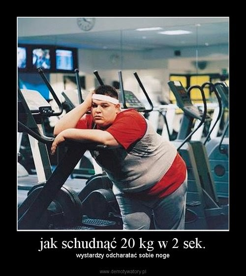

Jak Szybko Schudnąć - 5 - 10 kg | Schudnij W Tydzień
 Jak Szybko Schudnąć Jak Szybko Schudnąć Kontakt Polityka Prywatności O Mnie
Czy jesteś na diecie?
7/11/2012
0 Comments
Czy odpowiedź brzmi tak? Jeśli jeste na diecie np. dieta dukana czy dieta robinsona, to powinnaś dalej czytać ten artykuł.
Zastanów się czy naprawdę tego potrzebujesz i masz tak dużo tych zbędnych kilogramów. Zastanów się, czy już kiedyś wcześniej nie próbowałaś się odchudzać.
Wiesz ile osób mówi, że jest na diecie, a tak naprawdę je wszystko tak jak wcześniej. Tak naprawdę nie zmienia nic w swoich nawykach żywieniowych.
Ile razy udało Ci się wytrwać w postanowieniach diety i nawet schudnąć kilka kilogramów? A czy nie było przypadkiem tak, że na początku schudłaś, a później szybko po zakończeniu diety przytyłaś? Jak znam życie, to pewnie przerabiałaś to już nie jeden raz.
Ile różnych rodzajów diet już wypróbowałaś?
Pewnie było ich całkiem sporo i żadna nie pomagała. Pewnie podczas odchudzania wcale nie byłaś szczęśliwa a tym bardziej nie chciało Ci się gotować dla siebie posiłków.
Poza tym komu by się chciało żyć cały czas na tych samych posiłkach?
To właśnie dlatego większość diet nie przynosi oczekiwanych rezultatów.
Pewnie często zdarzało się że udało Ci się trochę schudnąć ale zaraz po zakończeniu diety tyłaś. Pomyśl sobie ile razy w ciągu całego swojego życia schudłaś i przytyłaś. Zobacz jaka to jest różnica kilogramów.
Diety zazwyczaj nie działają, bo nie potrafimy ich stosować przez dłuższy czas. Zawsze stanie się coś takiego, co spowoduje, że przerywamy dietę i zaczynamy jeść normalnie. Albo masz zły dzień i zjesz frytki i czekoladę. Albo po prostu zapomnisz się podczas oglądania telewizora i zjesz coś czego nie powinnaś jeść.
Musisz nauczyć się panować nad sobą i odżywiać się w odpowiedni sposób.
Zacznij się kontrolować i nie jedz śmieciowego jedzenia. Jeśli nie chcesz być gruba to omijaj hamburgery i frytki z daleka. Oczywiście jeśli zjesz je raz na jakiś czas to się nic nie stanie, ale to nie może zdarzać się zbyt często. Jeśli ograniczysz przekąski, to zobaczysz zmiany. A jak masz problemy z kontrolowaniem sie w restauracjach, to po prostu omijaj je i staraj się żywić sama.
Jedz mniejsze posiłki w ciągu dnia i nie objadaj się tak na noc. Ograniczaj się wtedy lepiej się wyśpisz i będziesz zdrowsza.
Aby się tego wszystkiego nauczyć musisz poświęcić temu trochę czasu i ciężkiej pracy.
No i oczywiście nie możesz się potępiać jeśli złamiesz jakąś zasadę diety. Przecież nie ma ludzi idealnych i każdemu może się pomylić.
Jeśli już siadasz do posiłku to skup się na nim i na kontrolowaniu siebie. Nie jedz czegoś, jeśli czujesz, że już jesteś pełna.
Ile razy rezygnowałaś z diety na jeden dzień bo zjadłaś pizze, albo lody? Wyobraź sobie, że czasami możesz to zjeść i nie katuj się za to aż tak bardzo.
Wiadomo, ze są produkty, których nie powinnaś jeść, ale często masz na nie ochotę. Pozwól sobie na nie czasem. Nie idzie zapanować nad wszystkim, poza tym małe przyjemności zawsze są wskazane. Ograniczaj się z rozsądkiem i nie wymagaj od siebie rzeczy niemożliwych
Ne podejmuj pochopnie decyzji o tym, że rezygnujesz z diety.
Wiadomo, że nie schudniesz, jeśli zbyt często będziesz jadła produkty wysoko kaloryczne. Ale pamiętaj, że nic nie jest zabronione. Przecież nie możesz sobie odmówić wszystkiego, bo to jest przecież niemożliwe do zrealizowania. Zobacz ile jest rodzajów diet. Zwróć uwagę, że każda z nich zabrania jeść czegoś innego. Nie ważne, która z nich wybierzesz, ważne, żebyś trzymała się jej postanowień i kontrolowała siebie.
Naucz się co możesz jeść a co nie. Które jedzenie, to jest to dobre, a które złe. Pamiętaj, że żadne pokarmy nie wyrządzą Ci krzywdy jeśli będziesz je jadła z umiarem.
Po prostu przestań nadużywać żywności. Najlepiej gotuj sobie sama i kontroluj, co dodajesz a co nie bo np. jest niezdrowe, albo ma za dużo kalorii.
Jeśli znajdziesz odpowiednią dietę dla siebie, to nauczysz się kochać żywność i samą siebie. Zobaczysz, że Twoje życie się odmieni i łatwiej będzie Ci panować nad sobą.
0 Comments
Błędy W Programach Odchudzających
3/13/2012
0 Comments
Jeśli przekraczasz próg swojej idealnej wagi, to zaczynasz ograniczać swoje jedzenie. Wydaje Ci się, że jak będziesz mniej jadła, to spalisz nadmiar tkanki tłuszczowej i wszystko wróci do normy. tak naprawdę, takie postępowanie może Ci przynieść odwrotny skutek przez co odchudzanie będzie dużo trudniejsze. Przy okazji, jeśli chcesz pozbyć się nadwagi i dowiedzieć się jak szybko schudnąć to powinnaś zdrowo się odżywiać. Kliknij w link aby dowiedzieć się więcej.Teraz kontynuujmy ten artykuł. Takie skutki są zrozumiałe. Nasz organizm po prostu przyzwyczaił się do określonego stylu życia. Wie, że jeśli nie dostanie określonej ilości jedzenia, może nie przetrwać. Właśnie dlatego ograniczanie spożywania pokarmów nie ma sensu. Jeśli zmniejszasz liczbę spożywanych kalorii, to organizm zaczyna wchodzić w specjalny stan i zabezpieczać się przed trudnymi warunkami. Takie postępowanie może utrudnić Ci odchudzanie, a nie w nim pomóc.
Cało zaczyna uruchamiać pewne procesy, które mają mu pozwolić przetrwać. To właśnie dlatego drastyczne ograniczenie spożywanych kalorii nie pomoże Ci zrzucić zbędnych kilogramów.
Eksperci doszli do wniosku, że osoby szczupłe częściej jedzą węglowodany złożone, a osoby otyłe tłuszcze. To sposób odżywiania ma znaczący wpływ na naszą wagę.
Musisz zapamiętać, że nie możesz schudnąć w bardzo krótkim czasie. Musisz wszystko zaplanować i przede wszystkim zmienić swoje nawyki żywieniowe. Najczęściej błędne informacje i porady nie pozwalają Ci uzyskać wymarzonej wagi. Niestety ludzie za często wydają pieniądze np. na tabletki, żeby szybko i bezproblemowo schudnąć. Takie postępowanie daje tylko iluzję odchudzania. Po krótkim czasie ponownie wracamy do poprzedniej wagi, co powoduje, ze jesteśmy sfrustrowani.
Badania pokazują, że szybkie diety nie przynoszą trwałej utraty wagi. To właśnie dlatego powinniśmy zmieniać na stałe nasze nawyki żywieniowe a nie głodzić się przez kilka tygodni.
Powinnaś o tym pamiętać szczególnie ze względu na swoje zdrowie. Otyłość może mieć tragiczne skutki dla Ciebie i Twojego ciała. To dlatego, że że otyłość bierze się z tłuszczów nasyconych.
Najczęściej ludzie myślą, że są otyli, bo jedzą za dużo kalorii. Tak naprawdę nie jest to prawdą. Teraz jesteśmy grubi, ponieważ spożywamy pokarmy, które maja więcej wartości energetycznej. Kalorie mają oczywiście wpływ na naszą wagę, ale nie jest to jedyny czynnik, który o niej decyduje. Jeśli naprawdę chcesz schudnąć musisz zacząć ćwiczyć. Siedzący tryb życia to wróg szczupłej i zgrabnej sylwetki. Musisz pamiętać o tych dwóch rzeczach jeśli chcesz zrozumieć na czym polega odchudzanie.
Niektórzy ludzie chcąc schudnąć koncentrują się na diecie, a zupełnie zapominają o treningu. Nie jest to najlepszy sposób postępowania. Jeśli chcesz osiągnąć zadowalające efekty w odchudzaniu musisz nie tylko ograniczyć spożywane kalorie, ale również regularnie ćwiczyć. Tylko te dwie rzeczy mogą zmniejszyć ilość tkanki tłuszczowej w Twoim organizmie. Takie postępowanie przyspieszy Twój metabolizm i pomoże osiągnąć Ci sukces.
Wobec tego jakie ćwiczenia są dla Ciebie najlepsze? Nie ma jednoznacznej odpowiedzi na to pytanie. Musisz wypróbować różne zestawy i sprawdzić, który działa na Ciebie najlepiej. W wyborze może Ci pomóc instruktor albo trener. Ważne żebyś zmieniła swój styl życia i sposób odżywiania się. Wybierz takie ćwiczenia, które będą Ci sprawiały przyjemność i relaksowały Cię po ciężkim dniu w pracy. Dzięki treningowi utrzymasz swoją wagę i będziesz miała zgrabne umięśnione ciało. Myślę, że to dobry sposób na siebie. Nie tylko schudniesz, ale również wzmocnisz swoje ciało.
Jeśli chcesz dowiedzieć się jak nie tyć w pracy to kliknij tutaj .
0 Comments
Jak Schudnąć I Nie Tyć W Pracy?
3/13/2012
2 Comments
Jak schudnąć i nie tyć w pracy?Pewnie często zdarza Ci się przytyć, kiedy masz w pracy dużo do zrobienia. Wtedy cały czas siedzisz w biurze i nie masz czasu na jakąkolwiek aktywność fizyczną. Jest wiele zawodów, których wykonywanie powoduje, że zaczynamy się objadać. Musisz iść np. służbowo na przyjęcie urodzinowe, albo gdzieś między jednym a drugim zajęciem zjesz jakiegoś Fast Fooda. W dzisiejszych czasach, gdzie głównie pracuje się na komputerze i przy burku musisz nauczyć się jak zapewnić ciału aktywność fizyczną w pracy.
To wszystko nie znaczy, że żeby schudnąć musisz rzucić swoją pracę. Poniżej znajdziesz 5 wskazówek, które powiedzą Ci jak spalać kalorie w pracy i dbać o szczupłą sylwetkę.
Po pierwsze powinnaś zaprzyjaźnić sie z wodą . Codziennie musisz wypić co najmniej 8 szklanek. To pomoże Ci się bardziej skoncentrować i spowoduje, że nie będziesz tak odczuwała głodu. Wiele osób błędnie interpretuje pragnienie. Wydaje im się, że są głodni i zamiast się napić dojadają gdzieś po kątach. Nie powinnaś czekać aż będzie chciało Ci się pić. Jeśli chcesz wypić 8 szklanek wody dziennie, to musisz mieć ją cały czas przy sobie i pić małymi łyczkami, co kilka minut.
Wychodź co jakiś czas na świeże powietrze. Na przerwach zamiast plotkować idź na krótki spacer. Możesz zaprosić też kogoś dla towarzystwa. Jeśli masz za krótkie przerwy, żeby gdzieś wyjść, to możesz chodzić w górę i w dół po schodach, to też na pewno Ci pomoże. Po pracy idź na 30 minutowy spacer. Możesz sobie przedłużyć drogę do domu jeśli wiedz, że popołudniu nie będziesz miała szansy nigdzie wyjść. Dzięki temu nie tylko polepszy Ci się krążenie, ale również poczujesz się świeżej i Twoja głowa odpocznie od natłoku myśli.
Dużo odpoczywaj ale nie zapomnij także wykonywać ćwiczenia odchudzające. Doba ma tylko 24 godziny, a niektórzy próbują zrobić w jeden dzień tyle ile mogliby swobodnie zrobić w ciągu dwóch. Jeśli się dobrze wyśpisz, to szybciej zrobisz pewne czynności i zajmą Ci one mniej czas. Jeśli będziesz zmęczona podczas pracy, to trudniej będzie Ci się skupić i wszystko potrwa dwa razy dłużej. Poza tym niedosypanie może również odbić sie na swojej wadze. Badania wykazują, że osoby zmęczona często dojadają batoniki i czekoladki. Poza tym inne padania pokazują, że niewyspane osoby produkuje za dużo hormonu stresu. To na pewno nie pomoże Ci ani schudnąć ani efektywniej pracować.
Nie jedź produktów z automatów. Bardzo rzadko jest tam coś zdrowego i dobrego dla Twojej talii. Zawsze jest tak, że zamiast zbożowych ciastek przyniesiesz coś z czekoladą. Dzięki temu twój brzuch szybko stanie się wypukły i ciężko będzie Ci się tego pozbyć. Żeby uniknąć takiego scenariusza zrób zakupy przed pracą. Kup sobie zdrowe przekąski, które nie będą miały wpływu na Twoją wagę. Dobrym pomysłem są np. owoce i warzywa. .
Nie ma osoby, która nie stresuje sie w pracy. Czasami jest tak, że przez kilka dni denerwujemy się bardzo mocno. Pamiętaj, ze długotrwały niepokój może prowadzić do emocjonalnego objadania się. Jeśli chcesz uniknąć czegoś takiego, to zapisuj to co jesz i w jakich ilościach. Wtedy łatwiej będzie Ci nad tym zapanować. Będziesz wiedziała co jesz i co zjadłaś niepotrzebnie. To jest naprawdę pomocno podczas diety.
Jeśli zdarza Ci się jeść jak jesteś smutna, albo nie masz humoru, to postaraj się, żeby w pobliżu było coś zdrowego, np. owoce. Możesz też sama sobie coś przygotować, żebyś miała pewność, że od tego nie przytyjesz. To dobre rozwiązanie.
No i na końcu powinnaś pamiętać o prowadzeniu dziennika żywieniowego. Zapisuj to co jesz i traktuj to poważnie. Kontroluj się i staraj się nadmiernie nie objadać. Takie postępowanie na pewno pomoże Ci być szczęśliwą w pracy i nie zaprzepaści Twojej diety. Pamiętaj o tym. Zobacz także video:
2 Comments
Author
Cześć! Tutaj Magda. Mam 33 lata i jestem instruktorką fittness oraz odchudzania. Czytaj artykuły na mojej stronie a dowiesz się jak szybko schudnąć.
Archives
July 2012
March 2012
Categories
All
Jak Szybko Schdunąć
Jak Szybko Schudnąć
Nadwaga
RSS Feed
Powered by Create your own unique website with customizable templates. Get Started